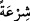
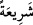
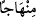

ve devam edegelen fürûunu da ikrâr eder. O kitaplara dayanan meşruiyetlerinin sona
erdiğini ve onlarla amel etme vaktinin geçtiğini beyan ederek onların mensuh
hükümlerini belirler. Şüphesiz bu kitapların meşruiyyeti devam eden hükümlerini
meşruiyyet vakti son bulan ve meşruiyetini kaybedenlerden ayırmak da Kur’ân’ın onlara
şâhit olmasının gereklerindendir.
“O halde” yani Kur’ân’ın durumu zikredildiği gibi olduğuna göre ehl-i kitap senin
hakemliğine başvurduğunda onların “aralarında Allah’ın” sana “indirdiği ile hükmet;
çünkü o, ilâhî kitaplardaki şer’î hükümlerin tamâmını ihtivâ etmektedir. Sana gelen
hakikati bırakıp da onların heva ve heveslerine uyma.” Onların arzularına uyarak sana
gelen haktan sapma.
“Her birinize bir şerîat ve bir yol verdik.” Burada muhatap değiştirilerek bütün
insanlara hitap edilmektedir. Fakat sadece mevcut insanlara değil, bilakis çoğunluk
dikkate alınarak aynı zamanda geçmiş kavimlere de hitap edilmektedir. Şöyle ki:
Ey şimdi var olan ve geçmiş ümmetler! Sizden her bir ümmete kendine has bir şerîat
ve bir yol verdik, tâyin ettik ve koyduk. Neredeyse hiç bir ümmet kendisi için tâyin
edilen şerîattan öteye geçemez.
Mûsâ (a.s.)’ın peygamber olarak gönderilmesinden Îsâ (a.s.)’a kadar olan ümmetin
şerîatı Tevrat, Îsâ (a.s.)’ın peygamber olarak gönderilmesinden Muhammed (s.a.)’e
kadar olan ümmetin şerîatı İncil’dir. Size gelince ey şimdi var olanlar, sizin yolunuz
Kur’ân’dan başkası değildir. O halde ona îman edin ve onun içinde olanlarla amel edin.
(
) ve (
) sözlükte su yolu anlamındadır. Allah’ın gönderdiği din, yani kanun
kıldığı oruç, namaz, hac, nikah vesair salâh şekilleri su yoluna benzetilmiştir. Çünkü su
fânî hayata sebep kılındığı gibi bu hükümler de ebedî hayâta sebep olan şeye ulaştıran
bir yoldur. (
) dinde apaçık yol demektir.
Âyetin bizim önceki ümmetlerin şerîatlarına göre kulluk etmediğimize delil olduğu
söylenmiştir. Doğrusu biz geçmiş ümmetlerden kalan hükümlerle, bizim şerîatımızın
hükümleri olması bakımından kulluk ederiz, yoksa öncekilerin hükümleri olduğu için
değil.
“Allah” bir tek ümmet yapmayı “dileseydi sizleri bir tek ümmet yapardı.” Yani
sizinle sizden evvelki ümmetler arasında dînî hükümlerde hiçbir ihtilaf, nesh ve
değişiklik olmaksızın hepinizi bütün asırlarda bir din üzerinde ittifak etmiş bir cemaat
kılardı. “Fakat” bunu, yani bir din üzerinde birleşmenizi istemedi. Bilakis ümmetler
arasında geçerli olan ilâhî kanunu murâd etti. “size verdiği ile sizi denemek için” yani
size verdiği asrına ve zamanına uygun farklı şerîatlar ile size, sizi imtihan eden bir
kimsenin yaptığı muamelede bulunmak için böyle yaptı.
Acaba itâat ederek, onların farklılığının büyük hikmetlere, dünyânız ve âhiretiniz için
faydalı mashalatlara dayanan ilâhî irade gereğince olduğuna inanarak onlarla amel
edecek misiniz? Yoksa haktan sapacak, nefsânî arzularınızın peşine düşecek, faydalı
olanla zararlı olanı değiştirecek ve hidâyetin yerine sapıklığı mı satın alacaksınız?
Mesnevî’de şöyle denilmektedir: